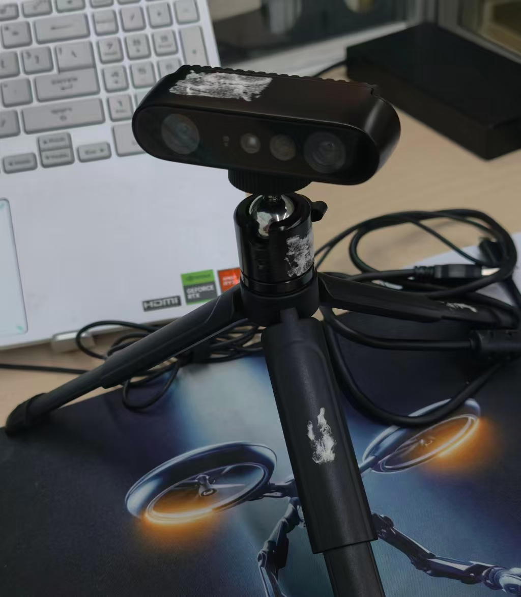
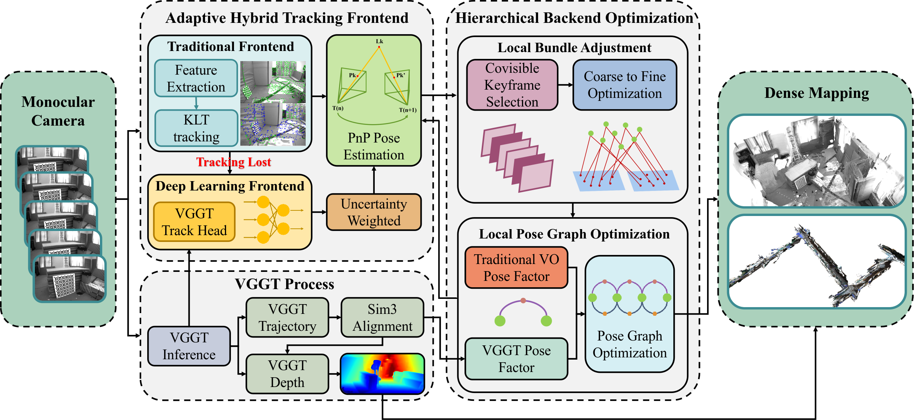
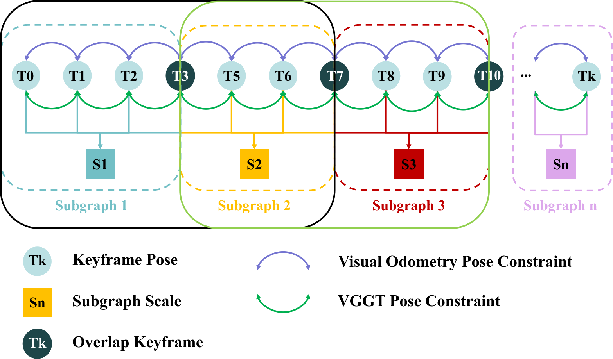

HyVGGT-VO: Tightly Coupled Hybrid Dense Visual Odometry with Feed-Forward Models
Abstract
Dense visual odometry (VO), which provides pose estimation and dense 3D reconstruction, serves as the cornerstone for applications ranging from robotics to augmented reality. Recently, feed-forward models have demonstrated remarkable capabilities in dense mapping. However, when these models are used in dense visual SLAM systems, their heavy computational burden limits the SLAM systems to processing only selected keyframes, resulting in sparse pose outputs. In contrast, traditional sparse methods provide high computational efficiency and high-frequency pose outputs, but lack the capability for dense reconstruction. To address these limitations, we propose HyVGGT-VO, a novel framework that combines the computational efficiency of sparse VO with the dense reconstruction capabilities of feed-forward models. To the best of our knowledge, this is the first work to tightly couple a traditional VO framework with VGGT, a state-of-the-art feed-forward model. Specifically, we design an adaptive hybrid tracking frontend that dynamically switches between traditional optical flow and the VGGT tracking head to ensure robustness. Furthermore, we introduce a hierarchical optimization framework that jointly refines VO poses and the scale of VGGT predictions to ensure global scale consistency. Our approach achieves an approximately 5x processing speedup compared to existing VGGT-based methods, while reducing the average trajectory error by 85% on the indoor EuRoC dataset and 12% on the outdoor KITTI benchmark. Our code will be publicly available upon acceptance.
Bechmark Evaluation
EuRoC MH01
EuRoC V101
KITTI 09
KITTI 10
Real-world Experiments

Figure 1: Data Collection Platform. To validate the real-world applicability of our proposed HyVGGT-VO, we conducted experiments in real-world environments. For data acquisition and live execution, we utilized the Orbbec Gemini 335 camera. In our experiments, the system is configured to operate in a strictly monocular setup, utilizing exclusively the left camera stream. All image sequences were captured at a resolution of 640 × 360 pixels and recorded at a constant frame rate of 30 Hz.
New Main Building Corridor
Reconstruction Results
EuRoC MH01
EuRoC V101
KITTI 04
KITTI 10
Empty Room
New Main Building Corridor
Method

Figure 2: System overview of HyVGGT-VO. Taking a monocular image stream as input, the system features a hybrid tracking frontend and an asynchronous hierarchical optimization backend. The frontend adaptively couples efficient KLT optical flow with a robust VGGT tracking head to handle visual degradation. In the backend, the first stage performs covisibility-based local Bundle Adjustment (BA) for metric precision, while the second stage executes an asynchronous local Pose Graph Optimization (PGO) incorporating VGGT-predicted relative poses and an explicitly optimized scale factor to ensure consistency.

Figure 3: Illustration of the Hierarchical Optimization Framework. Our local PGO framework integrates two primary types of constraints: scale-aware keyframe constraints derived from VGGT pose predictions, and keyframe relative pose constraints provided by the traditional VO. To properly address the inherent scale ambiguity of VGGT network predictions, we explicitly model the scale factor as a distinct state variable. This structural design incorporates two consecutive VGGT sub-graphs that share an overlapping keyframe, which inherently binds the scale factor across continuous batches, ensuring a smooth scale trajectory within the local map and preventing scale drift.
BibTeX
@article{HyVGGT-VO2026,
title={HyVGGT-VO: Tightly Coupled Hybrid Visual Odometry with Deep Feed-Forward Dense Models},
author={Junxiang Pang and Lipu Zhou and Baojie Chen},
journal={arXiv preprint arXiv:2603.05422},
year={2026}
}